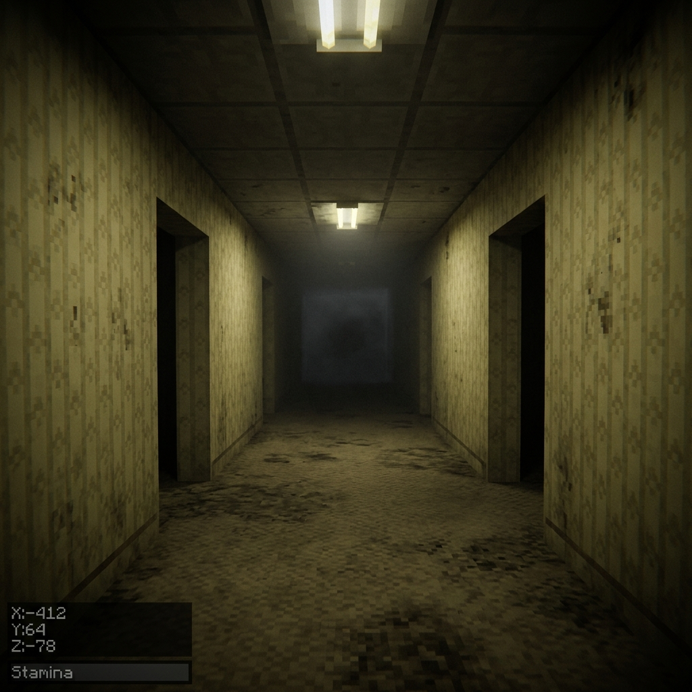
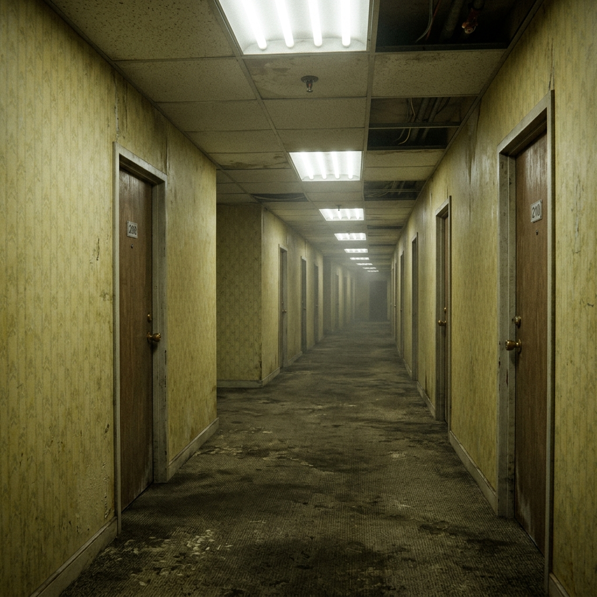
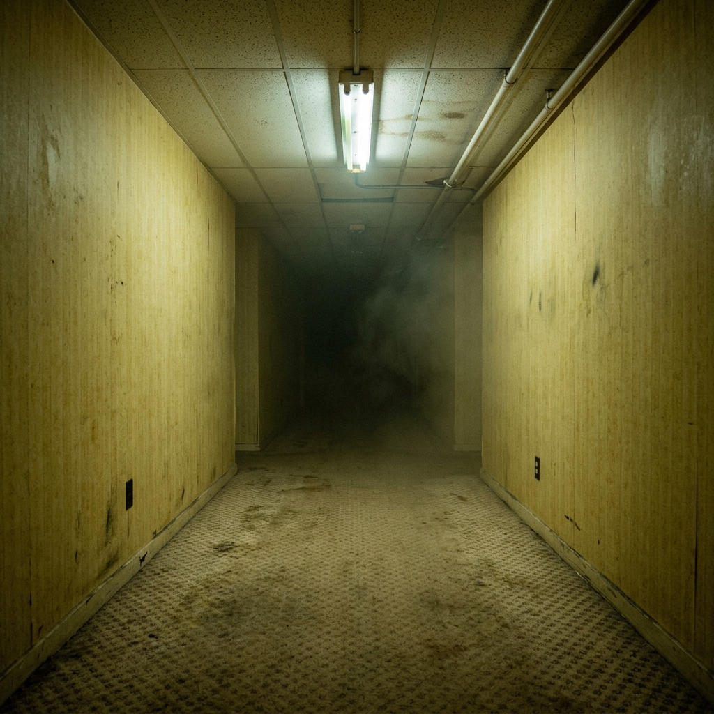
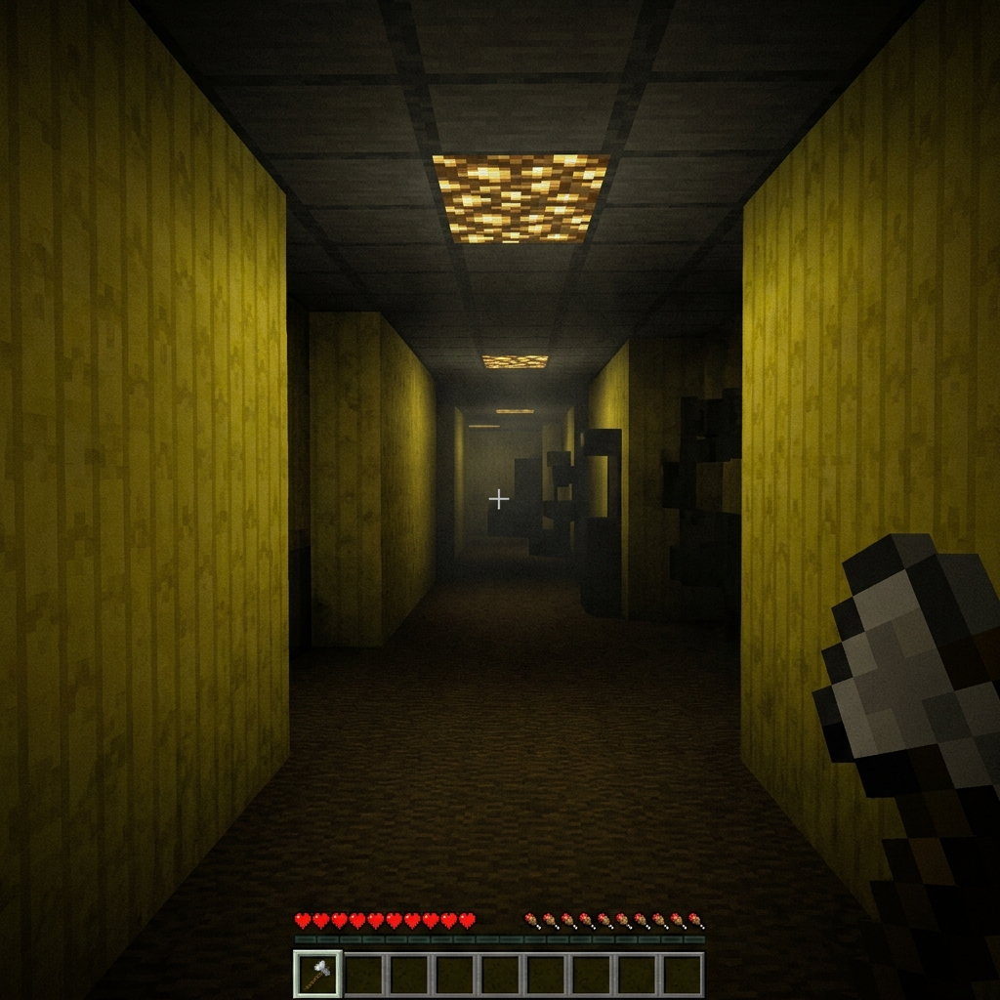
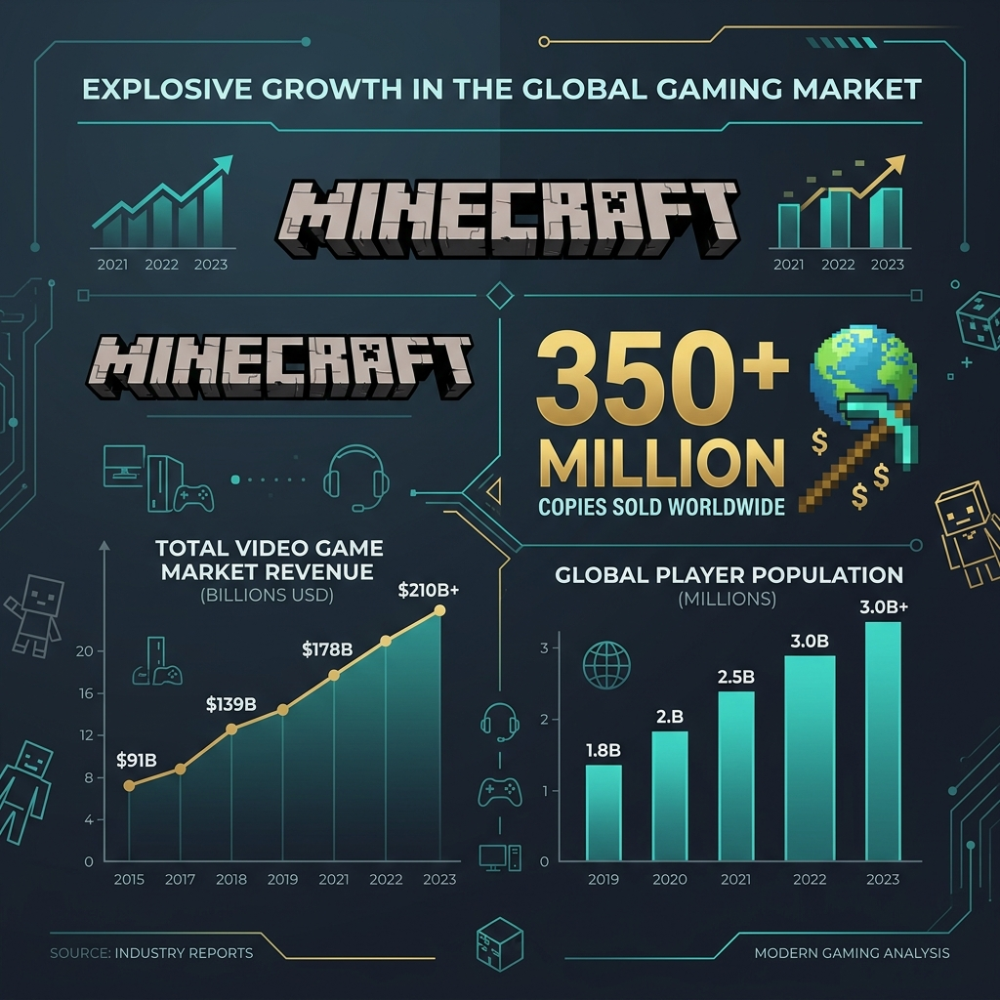
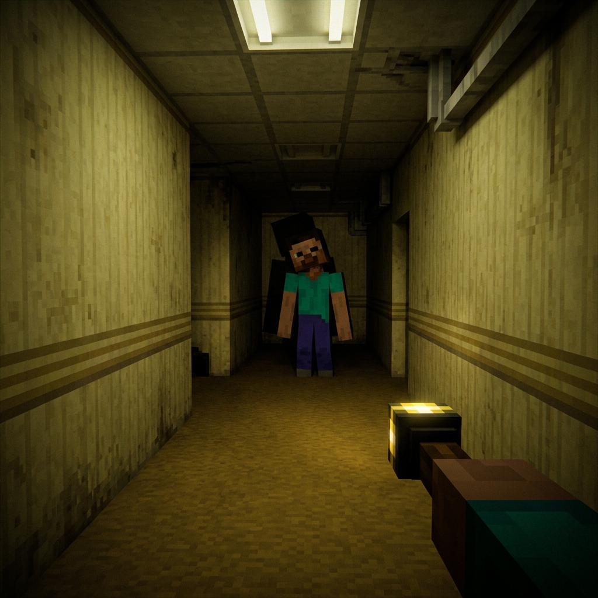
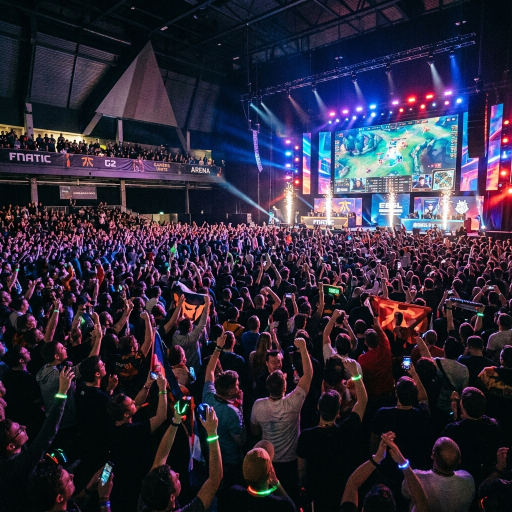
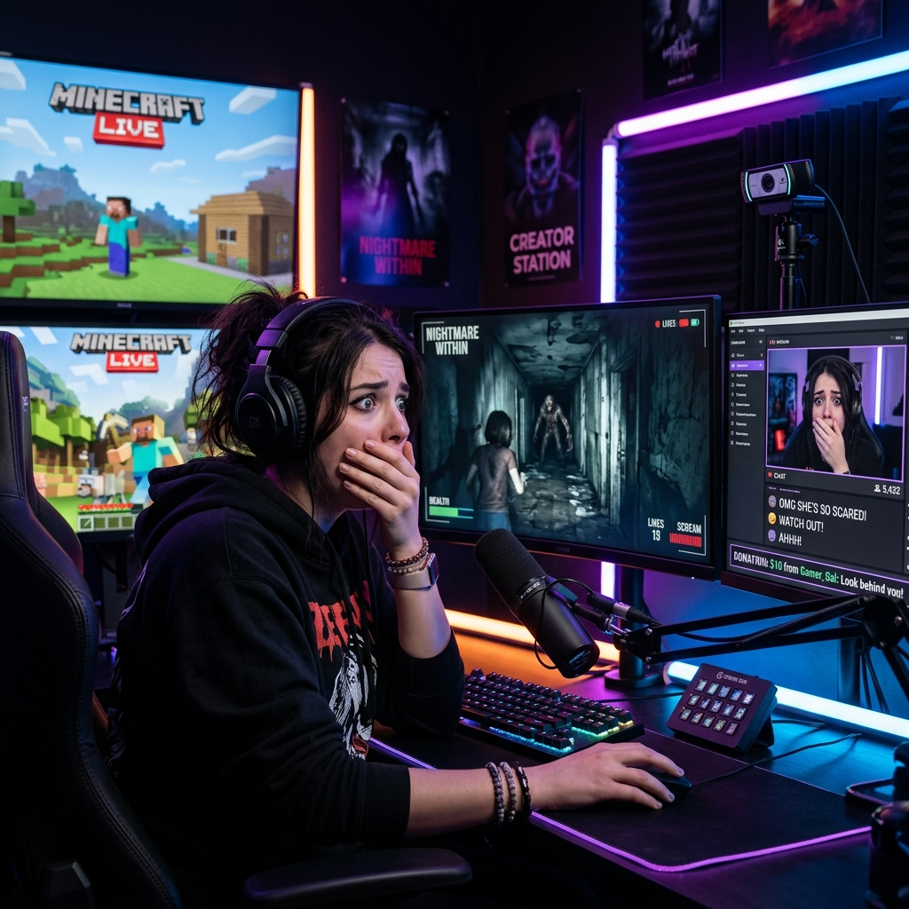
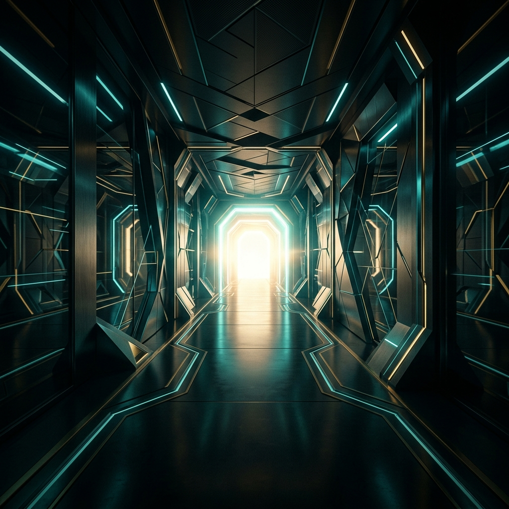
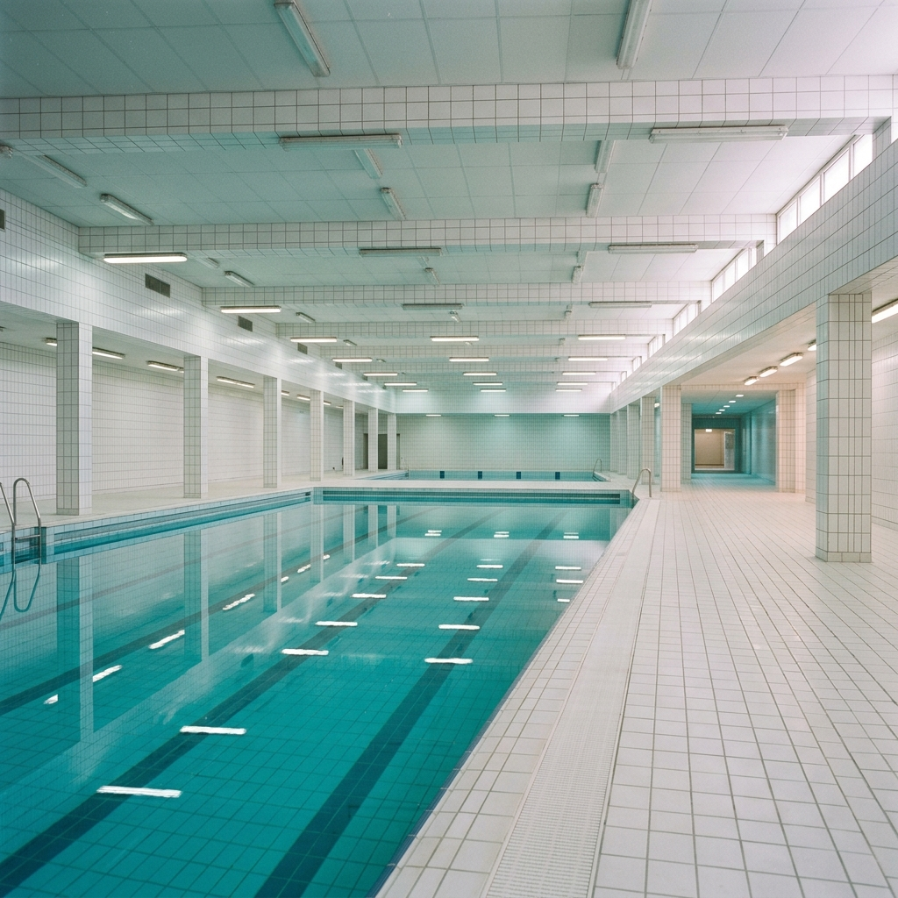

Хоррор-мод нового поколения для Minecraft, погружающий игрока в бесконечный лабиринт «Закулисья» — с уникальными мобами, атмосферным шейдером тумана и процедурной генерацией мира. Проект создан на платформе Fabric 1.20.1 и ориентирован на коммерческий запуск через Minecraft Marketplace, CurseForge и собственный мультиплеерный сервер.

Проекты с ИИ-анализом лица — это «красный океан» с высокими затратами, юридическими рисками и узкой аудиторией. Minecraft-мод — это «голубой океан» с миллиардной аудиторией и нулевым порогом входа. Стартапы в области машинного зрения сталкиваются с GDPR, биометрическими законами, конкуренцией от Google и Apple, а также потребностью в GPU-серверах стоимостью $50K+.
| Критерий | ИИ-проект (анализ лица) | Backrooms Mod |
|---|---|---|
| Целевая аудитория | Узкая B2B-ниша | 222 млн активных игроков |
| Порог входа | Сложная интеграция API | Скачал → играй |
| Конкуренция | Сотни стартапов, Google/Apple | Уникальная ниша |
| Виральность | Минимальная | YouTube / TikTok / Twitch |
| Регуляторные риски | GDPR, биометрия, судебные иски | Отсутствуют |
| Срок до прибыли | 12–24 месяца | 1–3 месяца |
| Масштабируемость | ML-серверы, GPU, облако | Код + текстуры, $0 затрат |



активных игроков ежемесячно и готовы платить за качественный контент. Minecraft Marketplace генерирует $140+ млн каждый квартал, а создатели уже заработали более $500 млн с момента запуска платформы. Franchise «Backrooms» набрала 75+ млн просмотров на YouTube, а фильм от студии A24 выходит 29 мая 2026 года — создавая идеальное окно для запуска нашего продукта.

Backrooms Mod — это не очередной скин-пак. Это полноценный игровой опыт с собственным измерением, тремя уникальными мобами, кастомной процедурной генерацией мира, атмосферным шейдером тумана и продвинутым ИИ, основанным на Finite State Machine (FSM). Игрок проваливается в бесконечный лабиринт жёлтых стен, тусклых ламп и жуткой тишины — где каждый «другой игрок» может оказаться Мимиком.
Мы используем кастомный Mixin-шейдер для тёплого жёлтого тумана, тусклые неоновые лампы (luminance=7), полностью тёмные потолки и ambient_light=0.0 для создания ощущения настоящего Backrooms.
Лёгкий и быстрый фреймворк с Mixin-поддержкой для глубокой интеграции шейдеров и тумана без сторонних зависимостей.
Lurker (преследователь), Howler (медленный танк с жуткими звуками), Mimic (копирует скин игрока и наблюдает из темноты).
Наш Mimic — это не обычный моб Minecraft. Его поведение основано на Finite State Machine с 4 состояниями: IDLE, STALKING, HUNTING и ATTACKING. Он копирует скин реального игрока, запоминает его последнюю позицию, повторяет движения с задержкой 1.5 секунды и замирает при прямом взгляде (SCP-173 механика через dot-product вектора и raycast). Безопасная телепортация-засада проверяет пол, стены и воздух перед перемещением — Мимик никогда не застрянет в стене.
Ни один существующий Backrooms-мод для Minecraft не предлагает подобный уровень ИИ. Это наше главное конкурентное преимущество, которое создаёт уникальный контент для стримеров: момент, когда игрок понимает, что «другой игрок» — это Мимик, становится вирусным клипом.

Backrooms Mod использует гибридную модель монетизации, комбинируя прямые продажи на Marketplace, пассивный доход от Creator Rewards и серверную экономику. Это обеспечивает диверсификацию доходов и устойчивость бизнеса даже при снижении одного из каналов.


Портирование на Bedrock Edition и продажа через официальный Marketplace за 990–1340 Minecoins ($5.99–$8.99). Доля создателя 70%. Доступ к 222 млн игроков. Потенциал: десятки тысяч продаж в первый месяц при правильном тайминге с выходом фильма A24.
Бесплатная публикация на CurseForge и Modrinth с монетизацией через Creator Rewards Program (оплата за каждое скачивание). Дополнительно: Patreon и Ko-fi для премиум-контента — эксклюзивные уровни, новые мобы, ранний доступ. Средний доход топ-модов: $2–15K/мес.
Запуск собственного мультиплеерного Backrooms-сервера. Монетизация через VIP-статусы, косметические предметы и донаты. Мультиплеер с Мимиком создаёт уникальный социальный опыт. Средний доход популярного сервера: $5–30K/мес при активном комьюнити.
Существующие Backrooms-моды для Minecraft ограничиваются простой генерацией жёлтых коридоров без атмосферы, без уникального AI и без шейдеров. Наш мод предлагает качественно другой уровень опыта — как разница между инди-хоррором и Alien: Isolation.
| Критерий | Конкуренты | Backrooms Mod |
|---|---|---|
| Мобы | Базовые зомби | 3 уникальных (FSM AI) |
| Мимик (копия игрока) | Отсутствует | Полная копия + наблюдение |
| Шейдеры / Туман | Нет | Mixin + оверлей + туман |
| Атмосфера | Обычный Minecraft | Тусклые лампы, тёмный потолок |
| SCP-механики | Нет | Замирание при взгляде |
| Мультиплеер | Базовый | Мимик копирует реальных игроков |
Хоррор-контент набирает в 3–5 раз больше просмотров, чем обычный gaming. Один вирусный ролик на YouTube или TikTok с моментом «это не игрок, это Мимик!» способен принести 500K+ просмотров и тысячи установок.
Стратегия: бесплатная отправка мода 20–30 контент-креаторам с аудиторией 100K–1M подписчиков за 2–4 недели до премьеры фильма A24 «Backrooms» (29 мая 2026). Хэштег #backrooms уже имеет 15+ миллиардов просмотров на TikTok — мы подключаемся к существующей волне интереса, а не создаём её с нуля.
| Источник | Мин./мес | Макс./мес |
|---|---|---|
| Marketplace | $3,000 | $25,000 |
| CurseForge | $500 | $5,000 |
| Patreon | $300 | $3,000 |
| Сервер | $2,000 | $15,000 |
| ИТОГО | $5,800 | $48,000 |
От студенческого проекта к коммерческому продукту — за три квартала. Наш план учитывает выход фильма A24, сезонность модинг-аудитории и циклы обновлений Minecraft.


Завершение мода (звуки, полировка). Публикация на CurseForge и Modrinth. Тизер-кампания за 2 недели до фильма A24 (29 мая). Отправка креаторам.
Портирование на Bedrock Edition. Заявка в Partner Program. Запуск мультиплеерного сервера. Новые уровни: Poolrooms, Level 1, Level 2.
Публикация на Marketplace. Расширение команды (3D-художник, звукорежиссёр). Лицензионные переговоры. Выход на $20K+/мес.
«350 млн людей купили Minecraft. 75 млн смотрели Backrooms.
Фильм от A24 выходит через месяц. Вопрос не "стоит ли это делать",
а "почему мы ещё не начали?"»
Backrooms Mod © 2026 — Pitch Deck